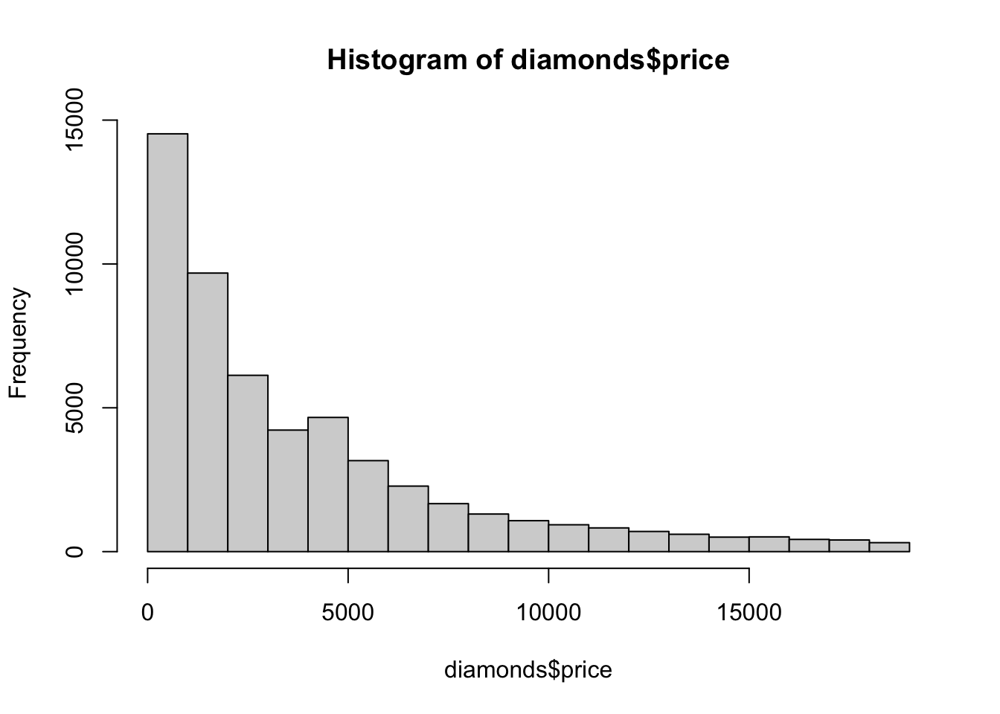

5 Visualisierungen
5.1 Voraussetzungen
Für diese Lektion benötigen wir das Paket tidyverse:
library(tidyverse)Und einen Datensatz, der in Form eines tibble vorliegt. Der Beispieldatensatz diamonds wird mitgeliefert:
diamonds## # A tibble: 53,940 x 10
## carat cut color clarity depth table price x
## <dbl> <ord> <ord> <ord> <dbl> <dbl> <int> <dbl>
## 1 0.23 Ideal E SI2 61.5 55 326 3.95
## 2 0.21 Premium E SI1 59.8 61 326 3.89
## 3 0.23 Good E VS1 56.9 65 327 4.05
## 4 0.290 Premium I VS2 62.4 58 334 4.2
## 5 0.31 Good J SI2 63.3 58 335 4.34
## 6 0.24 Very Go… J VVS2 62.8 57 336 3.94
## 7 0.24 Very Go… I VVS1 62.3 57 336 3.95
## 8 0.26 Very Go… H SI1 61.9 55 337 4.07
## 9 0.22 Fair E VS2 65.1 61 337 3.87
## 10 0.23 Very Go… H VS1 59.4 61 338 4
## # … with 53,930 more rows, and 2 more variables:
## # y <dbl>, z <dbl>Wenn wir mögen, können wir ihn mit der Funktion data() explizit in unser Environment laden:
data(diamonds)5.2 Überblick
Einen ersten Überblick kriegen wir zum Einen durch den Befehl str(), der uns die Typen in den Spalten anzeigt:
str(diamonds)## tibble [53,940 × 10] (S3: tbl_df/tbl/data.frame)
## $ carat : num [1:53940] 0.23 0.21 0.23 0.29 0.31 0.24 0.24 0.26 0.22 0.23 ...
## $ cut : Ord.factor w/ 5 levels "Fair"<"Good"<..: 5 4 2 4 2 3 3 3 1 3 ...
## $ color : Ord.factor w/ 7 levels "D"<"E"<"F"<"G"<..: 2 2 2 6 7 7 6 5 2 5 ...
## $ clarity: Ord.factor w/ 8 levels "I1"<"SI2"<"SI1"<..: 2 3 5 4 2 6 7 3 4 5 ...
## $ depth : num [1:53940] 61.5 59.8 56.9 62.4 63.3 62.8 62.3 61.9 65.1 59.4 ...
## $ table : num [1:53940] 55 61 65 58 58 57 57 55 61 61 ...
## $ price : int [1:53940] 326 326 327 334 335 336 336 337 337 338 ...
## $ x : num [1:53940] 3.95 3.89 4.05 4.2 4.34 3.94 3.95 4.07 3.87 4 ...
## $ y : num [1:53940] 3.98 3.84 4.07 4.23 4.35 3.96 3.98 4.11 3.78 4.05 ...
## $ z : num [1:53940] 2.43 2.31 2.31 2.63 2.75 2.48 2.47 2.53 2.49 2.39 ...Zum Anderen gibt die Hilfefunktion Auskunft über den Datensatz und die einzelnen Variablen (Metadaten):
?diamondsEinen Überblick über die wichtigsten statistischen Parameter erhalten wir mit:
summary(diamonds)## carat cut color
## Min. :0.2000 Fair : 1610 D: 6775
## 1st Qu.:0.4000 Good : 4906 E: 9797
## Median :0.7000 Very Good:12082 F: 9542
## Mean :0.7979 Premium :13791 G:11292
## 3rd Qu.:1.0400 Ideal :21551 H: 8304
## Max. :5.0100 I: 5422
## J: 2808
## clarity depth table
## SI1 :13065 Min. :43.00 Min. :43.00
## VS2 :12258 1st Qu.:61.00 1st Qu.:56.00
## SI2 : 9194 Median :61.80 Median :57.00
## VS1 : 8171 Mean :61.75 Mean :57.46
## VVS2 : 5066 3rd Qu.:62.50 3rd Qu.:59.00
## VVS1 : 3655 Max. :79.00 Max. :95.00
## (Other): 2531
## price x y
## Min. : 326 Min. : 0.000 Min. : 0.000
## 1st Qu.: 950 1st Qu.: 4.710 1st Qu.: 4.720
## Median : 2401 Median : 5.700 Median : 5.710
## Mean : 3933 Mean : 5.731 Mean : 5.735
## 3rd Qu.: 5324 3rd Qu.: 6.540 3rd Qu.: 6.540
## Max. :18823 Max. :10.740 Max. :58.900
##
## z
## Min. : 0.000
## 1st Qu.: 2.910
## Median : 3.530
## Mean : 3.539
## 3rd Qu.: 4.040
## Max. :31.800
## 5.3 Visualisierung mit dem Standardpaket
Es gibt in R mehrere grundlegend verschiedene Möblichkeiten, Daten zu visualiseren. Für einen schnellen Überblick sind z.B. hist() und boxplot() hilfreich:
hist(diamonds$price)
boxplot(diamonds$x)
5.4 Visualisierung mit ggplot()
Das Paket ggplot2 ist Teil vom tidyverse. Hiermit lassen sich sehr flexible Graphiken gestalten. Wir werden ausschließlich mit diesem System arbeiten.
Die Syntax ist dabei auf den ersten Blick etwas komplexer.
Am Anfang steht der Befehl ggplot(x) mit dem Datensatz als Parameter
ggplot(data=diamonds)
Mit einem Mapping-Parameter legen wir die Dimensionen fest:
ggplot(data=diamonds, mapping=aes(x=price, y=carat))
Das gleiche ohne Parameternamen:
ggplot(diamonds, aes(price, carat))Nun kann mit dem +-Operator ein “geometrischer” Layer hinzugefügt werden:
ggplot(diamonds, aes(x=carat, y=price)) +
geom_point()
Weitere geom-Layer lassen sich mit dem +-Operator hinzufügen:
ggplot(diamonds, aes(x=carat, y=price)) +
geom_point() +
geom_smooth()
Die Layer-Funktionen können durch Parameter angepasst werden:
ggplot(diamonds, aes(x=carat, y=price)) +
geom_point(size=0.5) +
geom_smooth(color="red")Dabei lassen sich in den einzelnen Layers mappings hinzufügen oder verändern:
ggplot(diamonds, aes(x=carat, y=price)) +
geom_point(aes(color=clarity), size=0.5) +
geom_smooth(color="red")
Schließlich lassen sich noch viele weitere optische Aspekte anpassen, z.B. Achsen, Farben, etc.:
ggplot(diamonds, aes(x=carat, y=price)) +
geom_point(aes(color=clarity), size=0.5) +
geom_smooth(color="red") +
scale_x_continuous("Karatzahl", breaks=seq(0,5,0.5)) +
scale_y_continuous("Preis") +
scale_color_brewer("Klarheit") +
theme_dark()
5.5 Aufgaben (mit Lösungen)
Versuchen Sie, folgende Visualisierungen des Datensatzes diamonds auszugeben:
ggplot(diamonds, aes(x=cut)) +
geom_bar(aes(fill=color))ggplot(diamonds, aes(x=depth, y=price)) +
geom_point(alpha=0.1, aes(color=cut)) +
guides(colour=guide_legend(override.aes=list(alpha=1)))
ggplot(diamonds, aes(x=color, y=price)) +
geom_boxplot(aes(color=color), outlier.colour = NA) +
facet_wrap(~cut) +
theme(legend.position="none") +
scale_x_discrete("Farbe") +
scale_y_continuous("Preis")
5.5.1 R for Data Science
Schauen Sie sich die Publikation R for Data Science an.
Was ist das für ein Buch? Wer ist das Zielpublikum?
Lesen Sie das Kapitel “3: Data Visualization” und vollziehen Sie die Visualisierungen nach.
Bearbeiten Sie die Aufgaben.
Bearbeiten Sie die RStudio Primers zu Datenvisualisierung.